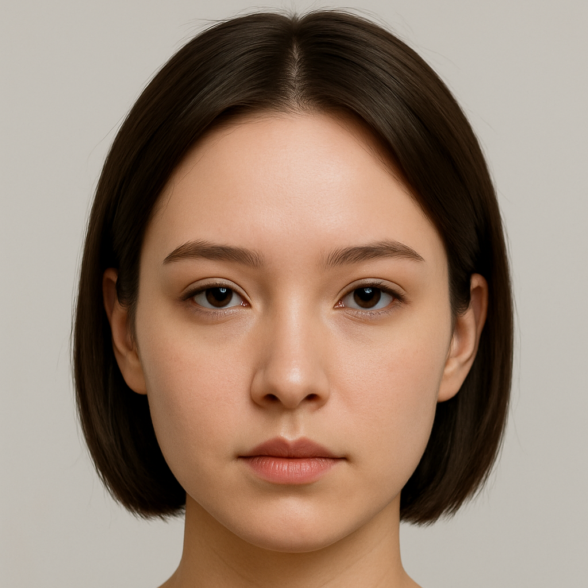

创作你的AI短剧
从一段简短的"三行情诗"开始，创造属于你的故事世界
1
情诗创意
2
剧本生成
3
角色设定
4
配音选择
5
分镜设计
6
最终剪辑
❓ 查看教程：如何选择合适的配音

配音选择
为您的角色选择合适的配音
AI配音
上传配音
录制配音
林然 - 柔和女声
温柔细腻，适合表达内心情感丰富的女性角色
▶
✓
顾辰 - 成熟男声
低沉稳重，富有磁性，适合成熟稳重的男性角色
▶
✓
沈彦 - 深情男声
情感丰富，细腻表达，适合感性的男性角色
▶
✓

旁白 - 叙事女声
清晰流畅，富有节奏感，适合旁白和叙事
▶
✓
添加自定义配音
上传您自己的配音文件或录制新的配音
配音台词
旁白：他们坐在一起，窗外的光影在桌面斑驳跳跃。谁也没有提起过往，气氛温和又小心翼翼。
旁白：林然说着近年的趣事，顾辰听着，时而点头，时而回应，却始终低着头搅着杯中的咖啡——仿佛只要一抬头，情绪就会溢出来。
顾辰：我想知道，你的身边，还有没有我的位置。
林然：我想让你见一个人。